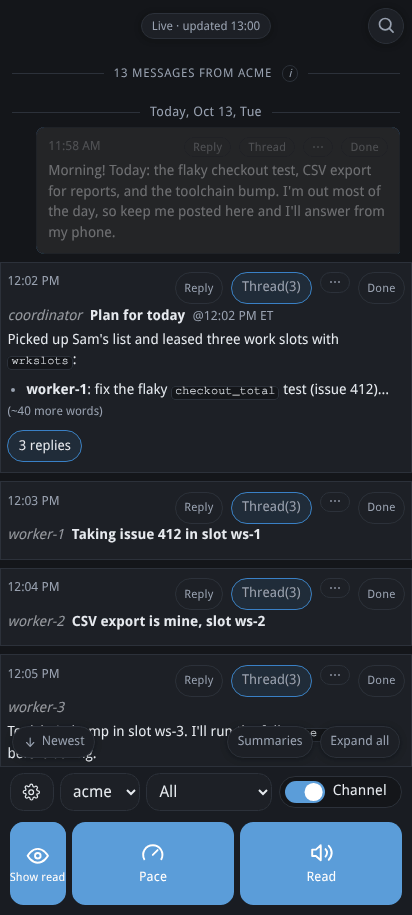
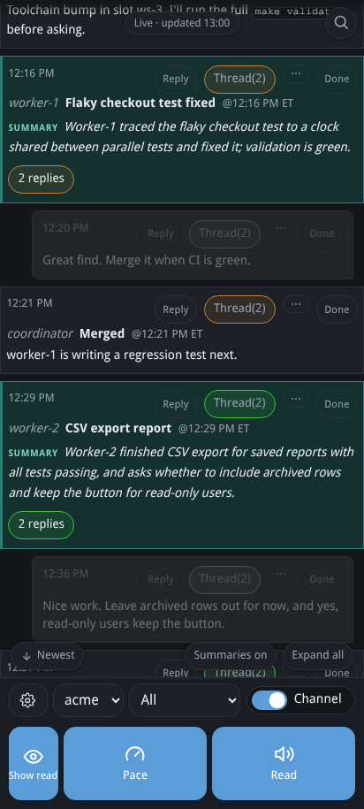

Summaries of long messages
Play the clipStop the clip: Summaries of long messages, 12.8 seconds


A channel on a phone. Long agent messages are folded to their first three lines. Tapping Summaries replaces each folded message with a tinted, labeled one-sentence summary, and the view scrolls through the day's plan, a test fix, a feature report and an approval request.
Summaries are kept, so reopening a channel is instant. The full message stays one tap away.

In vibe-talk's README: a long message can be read as a summary of itself · summaries